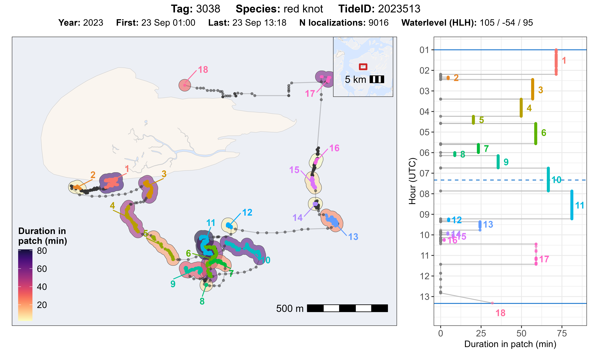
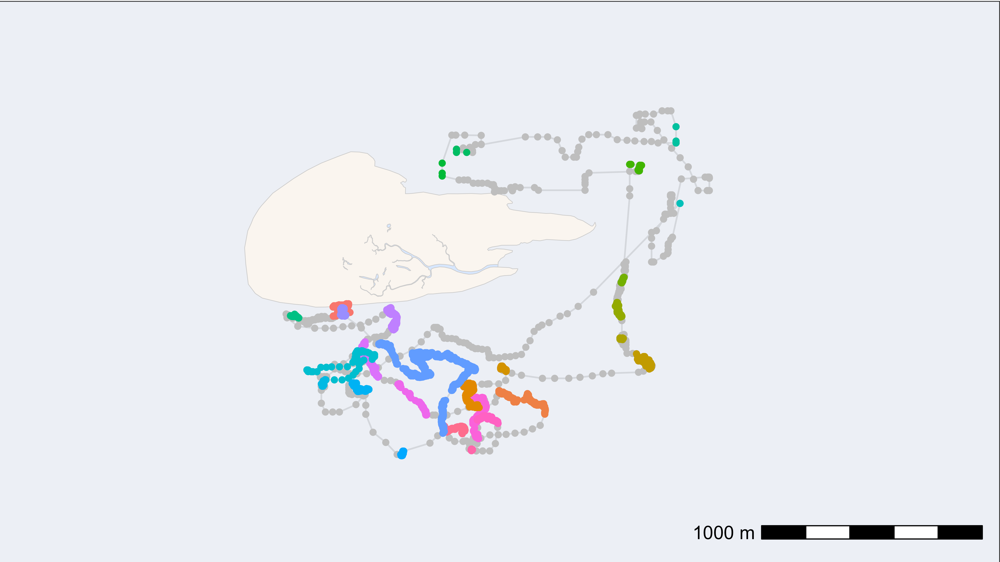
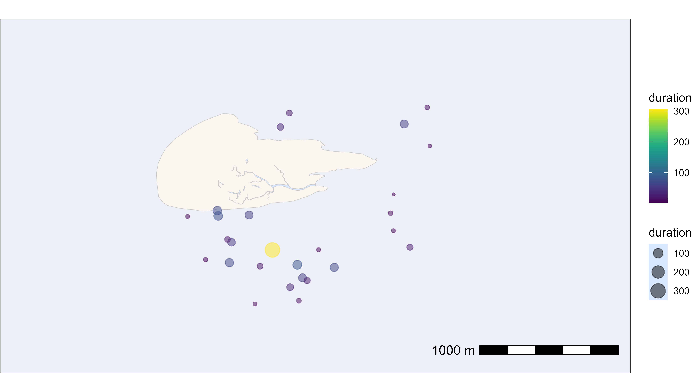
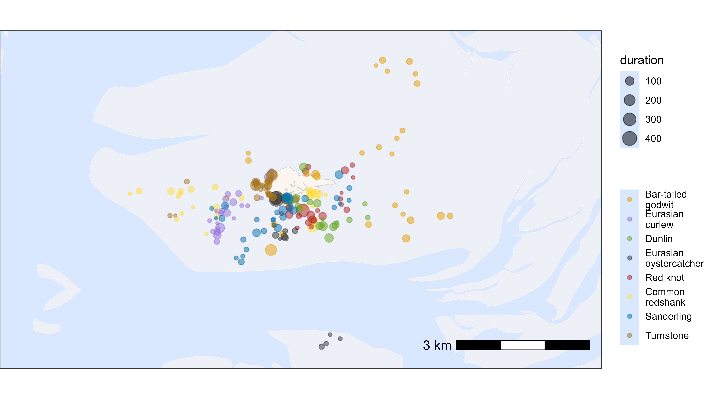

Add residency patches
Source:vignettes/extended_workflow/add_residency_patches.Rmd
add_residency_patches.RmdThis vignette shows how to assign residency patches to WATLAS data. Since every species has distinct behaviours, this analysis will require species specific adjustments of parameters. However, we ignore this for this example and provide a general workflow that can be adapted to different species and data quality.
Background and parameter explanation
The atl_res_patch() function is designed to segment
WATLAS movement data into residence patches. The main parameter is speed
(max_speed). With perfect data that would be the only
parameter necessary to adjust, because the speeds of flying and walking
or standing do not overlap. However, because WATLAS data have
localization error (comparable to GPS accuracy, see Beardsworth
et al. 2022) and can have gaps, we need to have additional variables
for classifying these data into robust residence patches.
The logic of the function is to first identify proto-patches
(preliminary residence patches), which are based on subsequent
localizations with a speed smaller than max_speed, distance
between positions smaller than lim_spat_indep and the time
between positions smaller than lim_time_indep.
Proto-patches which have less positions than min_fixes, are
then filtered out.
Then the function calculates the median proto-patch position and the
time between proto-patch (time between last location and first location
of the next proto-patch). Based on this, proto-patches are merged if the
distance between the median position of the proto-patch is <
lim_spat_indep, and the time between the proto-patch is
< lim_time_indep.
Lastly, the function assigns a unique patch ID for each residency patch from 1 to n, in order of the time.
Note: Keep in mind that smoothing and thinning will influence the
speed and thus the residence patches. The atl_res_patch()
function is designed to work with data that has already been filtered
(var_max < 5000) and smoothed
(moving_window = 5), so it is recommended to run this
function after these steps. With short position intervals (e.g. 3 sec),
position error can lead to speed outliers, which influences
(i.e. reduces) the creation of proto-patches. To avoid this, the speed
can be set to a higher value, or the data can be thinned before.
Parameters overview:
-
max_speed: A numeric value specifying the maximum speed (m/s) between two coordinates that would be considered non-transitory. -
lim_spat_indep: A numeric value of distance in metres of the spatial distance between two patches for them to the considered independent. This parameter is there to avoid that a gap in data does not make a new proto-patch when the bird was still at the same location and works in combination withlim_time_indep. -
lim_time_indep: A numeric value of time in minutes of the time difference between two patches for them to be considered independent. This parameter can prevent the creation new proto-patches when there are large gaps in the data. For example, at the roost site a bird might not move for long in at a location with bad signal strength, but we can assume the bird was still at the same location. If the bird then moves away and sends data again, we can classify all positions at this place as the same residency patch. -
min_fixes: The minimum number of fixes for a group of spatially-proximate number of points to be considered a proto-patch. To make sure that at least a few points are considered together to qualify as residency patch. -
min_duration: The minimum duration (in seconds) for classifying residence patches. With high-sampling interval (e.g. 1 sec), short residence patches can be created, which are not biological relevant.
Guidelines to choose parameters:
In general, when deciding on the optimal parameters, the key is to find a good balance between true and false positives. We give some starting points for each parameter, which has to be adjusted based on the data quality and species behaviour.
-
max_speed: Should be as high as possible in between walking and flying speeds. Due to error in data erroneously high/‘flying’ speeds are corrected due to subsequent proto-patches being merged on distance. A good starting point is 3 m/s, but could be increased if needed, if it prevents the creation of proto-patches that should be assigned as resident locations. -
lim_spat_indep: Decides on the distance between two proto-patches to be considered independent. This is a key parameter, because it prevents the creation of new proto-patches when the bird is still at the same location. A good starting point is 75 m, but could be increased if the data are very gappy or if the species has large elongated foraging patches. -
lim_time_indep: 180 min (3 hours) works typically, but could be increased (e.g. to 240 or higher) with really gappy data. For example, when the analysis is focused on roosting behaviour, this could be increased to e.g. 6 hours (360 min), to deal with large gaps in the data that can occur with roosting birds not moving and being at the same place with bad signal strength. -
min_fixes: As small as possible. Only assign new patch if speed is consistently (several points) below this threshold, not just once. 3 fixes should usually work. -
min_duration: As small as possible, given biological relevance. 120 sec (2 minutes) seems reasonable.
Load packages and required data
# packages
library(tools4watlas)
library(ggplot2)
library(viridis)
library(foreach)
library(doFuture)
# load example data
data <- data_example
# file path to WATLAS teams data folder
fp <- atl_file_path("watlas_teams")
# load tide pattern data
tidal_pattern <- fread(paste0(
fp, "waterdata/allYears-tidalPattern-west_terschelling-UTC.csv"
))Calculate residency patches by tag
To calculate residency patches, we can first subset relevant columns
from the data (to reduce the memory size of the table - as this table
will be sent to all cores when computing in parallel), but also can use
the original data.table, if working with few data. We then
extract the unique tag IDs from the data and run
atl_res_patch() for each tag in parallel, which adds an
additional column to the data table, called patch, which
contains unique patch ID’s for each tag.
# subset relevant columns
data <- data[, .(species, posID, tag, time, datetime, x, y, tideID)]
# unique tag ID
id <- unique(data$tag)
# register cores and backend for parallel processing
registerDoFuture()
plan(multisession)
# loop through all tags to calculate residency patches
data <- foreach(i = id, .combine = "rbind") %dofuture% {
atl_res_patch(
data[tag == i],
max_speed = 3, lim_spat_indep = 75, lim_time_indep = 180,
min_fixes = 3, min_duration = 120
)
}
# close parallel workers
plan(sequential)
# show head of the summary table
head(data) |> knitr::kable(digits = 2)| species | posID | tag | time | datetime | x | y | tideID | patch |
|---|---|---|---|---|---|---|---|---|
| redshank | 2 | 3027 | 1695438805 | 2023-09-23 03:13:25 | 650705.6 | 5902556 | 2023513 | 1 |
| redshank | 3 | 3027 | 1695438808 | 2023-09-23 03:13:28 | 650705.6 | 5902556 | 2023513 | 1 |
| redshank | 4 | 3027 | 1695439189 | 2023-09-23 03:19:49 | 650721.0 | 5902559 | 2023513 | 1 |
| redshank | 5 | 3027 | 1695439192 | 2023-09-23 03:19:52 | 650721.1 | 5902559 | 2023513 | 1 |
| redshank | 6 | 3027 | 1695439195 | 2023-09-23 03:19:55 | 650723.1 | 5902564 | 2023513 | 1 |
| redshank | 7 | 3027 | 1695439198 | 2023-09-23 03:19:58 | 650723.1 | 5902564 | 2023513 | 1 |
Evaluate residency patch classification and parameters
The function atl_check_res_patch() can be used to
evaluate the residency patch classification, by tag and tide. The title
of the plot gives standard information about the data and the water
level for the corresponding tide. It plots the track with residency
patches on a map and shows the duration (time in a patch in min) as
coloured polygon on the map and as plot against the time in a separate
plot. Time starts on the top and goes from high tide to high tide (solid
blue lines), as well as indicating low tide (dashed blue line).
Example for one tag and tide
We can select one tag and tide to plot the data. Additionally, we
need to specify the offset of the tidal data we use (e.g. 30 min for
Terschelling) and a buffer (in m) around the residency patch data to
create a polygon. This buffer should best be
lim_spat_indep.
atl_check_res_patch(
data[tag == "3038"], tide_data = tidal_pattern,
tide = "2023513", offset = 30,
buffer_res_patches = 75 / 2
)
Loop through all tags and tides
For a better overview we can also plot all data by tag and tide or
for example a random sample of 100 tags and tides. The plots are saved
in the choosen directory (e.g. ./outputs/res_patch_check/ -
edit path as desired), which has to be created before running the
code.
# unique ID combinations
idc <- unique(data[, c("species", "tag", "tideID")])
# sample 100 combinations to plot
set.seed(123)
idc <- idc[sample(.N, 100)]
# register cores and backend for parallel processing
registerDoFuture()
plan(multisession)
# loop to make plots for all
foreach(i = seq_len(nrow(idc))) %dofuture% {
# plot and save for each combination
atl_check_res_patch(
data[tag == idc$tag[i]],
tide_data = tidal_pattern,
tide = idc$tideID[i], offset = 30,
buffer_res_patches = 75 / 2,
filename = paste0(
"./outputs/res_patch_check/",
idc$species[i], "_tag_", idc$tag[i], "_tide_", idc$tideID[i]
)
)
}
# close parallel workers
plan(sequential)Based on these plots and potentially additional checks, the parameters can be adjusted to improve the classification of residency patches.
Summary of residency patch data
Once we are satisfied with the residency patch classification, we can summarize the residency patches by tag and patch and merge desired columns back to our full data table.
# summary of residency patches
data_summary <- atl_res_patch_summary(data)
# duration in minutes
data_summary[, duration := duration / 60]
# merge desired summary columns to data
data[data_summary, on = c("tag", "patch"), `:=`(
duration = i.duration,
disp_in_patch = i.disp_in_patch
)]
# show head of the summary table
head(data_summary) |> knitr::kable(digits = 2)| tag | patch | nfixes | x_mean | x_median | x_start | x_end | y_mean | y_median | y_start | y_end | time_mean | time_median | time_start | time_end | dist_in_patch | dist_bw_patch | time_bw_patch | disp_in_patch | duration |
|---|---|---|---|---|---|---|---|---|---|---|---|---|---|---|---|---|---|---|---|
| 3027 | 1 | 52 | 650705.5 | 650702.8 | 650705.6 | 650701.9 | 5902566 | 5902562 | 5902556 | 5902570 | 1695439841 | 1695439509 | 1695438805 | 1695442747 | 178.36 | NA | NA | 14.61 | 65.70 |
| 3027 | 2 | 60 | 650776.6 | 650776.6 | 650778.7 | 650771.9 | 5902216 | 5902217 | 5902216 | 5902206 | 1695443135 | 1695443132 | 1695443041 | 1695443230 | 51.41 | 362.21 | 293.98 | 12.29 | 3.15 |
| 3027 | 3 | 2456 | 650760.9 | 650762.0 | 650778.4 | 650699.8 | 5901722 | 5901737 | 5902014 | 5901490 | 1695447498 | 1695447344 | 1695443257 | 1695451884 | 1968.58 | 192.16 | 27.00 | 530.22 | 143.79 |
| 3027 | 4 | 64 | 648364.2 | 648362.5 | 648360.7 | 648365.8 | 5901596 | 5901590 | 5901578 | 5901620 | 1695452281 | 1695452282 | 1695452178 | 1695452382 | 79.03 | 2340.88 | 293.98 | 42.01 | 3.40 |
| 3027 | 5 | 41 | 648059.6 | 648058.4 | 648059.7 | 648058.4 | 5902193 | 5902192 | 5902184 | 5902204 | 1695452509 | 1695452511 | 1695452439 | 1695452577 | 48.94 | 641.75 | 57.00 | 19.69 | 2.30 |
| 3027 | 6 | 316 | 647775.8 | 647776.4 | 647771.5 | 647775.4 | 5902555 | 5902555 | 5902560 | 5902546 | 1695453152 | 1695453155 | 1695452625 | 1695453663 | 452.32 | 456.97 | 48.00 | 13.69 | 17.30 |
| Column | Description |
|---|---|
| tag | 4 digit tag number (character), i.e. last 4 digits of the full tag number |
| patch | Patch ID |
| nfixes | Number of fixes in the patch |
| x_mean | Mean X-coordinate in meters (UTM 31 N) |
| x_median | Median X-coordinate in meters (UTM 31 N) |
| x_start | X-coordinate at the start of the patch (UTM 31 N) |
| x_end | X-coordinate at the end of the patch (UTM 31 N) |
| y_mean | Mean Y-coordinate in meters (UTM 31 N) |
| y_median | Median Y-coordinate in meters (UTM 31 N) |
| y_start | Y-coordinate at the start of the patch (UTM 31 N) |
| y_end | Y-coordinate at the end of the patch (UTM 31 N) |
| time_mean | Mean UNIX time (seconds) for the patch |
| time_median | Median UNIX time (seconds) for the patch |
| time_start | Start UNIX time (seconds) of the patch |
| time_end | End UNIX time (seconds) of the patch |
| dist_in_patch | Total distance (in meters) travelled within the patch (cummulative distance) |
| dist_bw_patch | Distance (in meters) between end of previous and start of current patch |
| time_bw_patch | Time (in seconds) between end of previous and start of current patch |
| disp_in_patch | Straight-line displacement (in meters) between start and end of the patch |
| duration | Time duration (in seconds) spent within the patch |
Plot by tag
We can also easily plot the residency patches by tag as desired using
ggplot2. In this example we will plot the residency patches
for one red knot (tag 3038). The residency patches are coloured by patch
ID, and the points are plotted with a grey colour to show the track.
# subset red knot
data_subset <- data[tag == 3038]
data_summary_subset <- data_summary[tag == 3038]
# create basemap
bm <- atl_create_bm(data_subset, buffer = 500)
# track with residency patches coloured
bm +
geom_path(data = data_subset, aes(x, y), alpha = 0.1) +
geom_point(
data = data_subset, aes(x, y), color = "grey",
show.legend = FALSE
) +
geom_point(
data = data_subset[!is.na(patch)], aes(x, y, color = as.character(patch)),
size = 1.5, show.legend = FALSE
)
Or we could plot the residency patch at it’s median position with the duration in minutes as size and colour of the points.
# plot residency patches itself by duration
bm +
geom_point(
data = data_summary_subset,
aes(x_median, y_median, color = duration, size = duration),
show.legend = TRUE, alpha = 0.5
) +
scale_color_viridis()
Plot by species
Similar, we can plot the residency patches by species. For this we need to merge the species information back to the summary table, which is done in the code below. The residency patches are coloured by species and sized by duration.
# create basemap
bm <- atl_create_bm(data, buffer = 500)
# add species
du <- unique(data, by = "tag")
data_summary <- data_summary[du, on = "tag", `:=`(species = i.species)]
# plot residency patches itself by duration and species
bm +
geom_point(
data = data_summary,
aes(x_median, y_median, color = species, size = duration),
show.legend = TRUE, alpha = 0.5
) +
scale_color_manual(
values = atl_spec_cols(),
labels = atl_spec_labs("multiline"),
name = ""
)